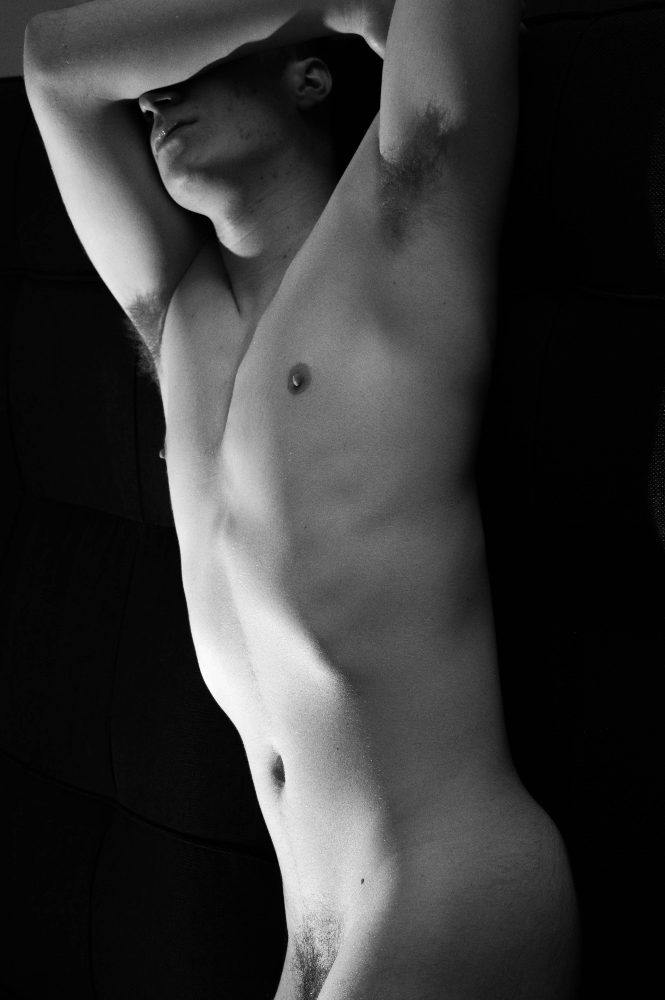

I am an aspiring Graphic Designer and Photographer based in Boston. I am currently a junior enrolled at Emmanuel College. For a whole semester, I decided to study form, whether that be the body, objects, or architecture. I am fascinated by the simplistic, raw values of things. Essentially, I explored the serenity, stillness, and abstraction in discovering convergeneces of line, light, and texture that, "sing to the soul".
~ Enjoy